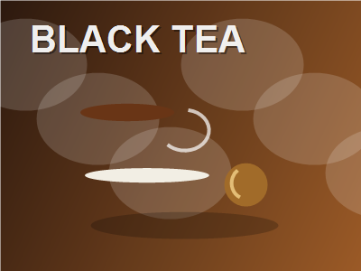

Recipe
Flija
Layered Balkan pancake pie served with cream.
Ingredients
- 500 g flour
- 650 ml water
- Salt
- 200 g cream
- 100 g butter
- Yogurt to serve
How to make it
- Whisk flour, water and salt into thin batter. Work in a bowl for 2-3 minutes until the mixture looks even, then let it rest for 10-20 minutes so the flour, meat or spices hydrate properly.
- Bake thin layers one at a time under high heat. Bake in a fully preheated oven, usually 190-220C, until the top is golden and the center is hot; start checking after 20 minutes for pastries and after 45 minutes for larger roasts.
- Brush each layer with cream and butter. Keep the pieces even in size and seal edges well. If the dough or filling feels soft, chill it for 10 minutes before cooking so it holds its shape.
- Cut into wedges and serve warm. Taste once more before serving. Add salt, acid, herbs or a spoon of sauce at the end while the dish is still hot.
More info
 Kosovo
Kosovo
Black teaClean tea lift for savory bites Balkan folkBright table rhythm for pastry and grill
Balkan folkBright table rhythm for pastry and grillServing note
Keep the plate simple and let the main texture lead: crisp pastry, tender stew, glossy sauce or fresh garnish. This page is a compact cooking guide, not a long article.